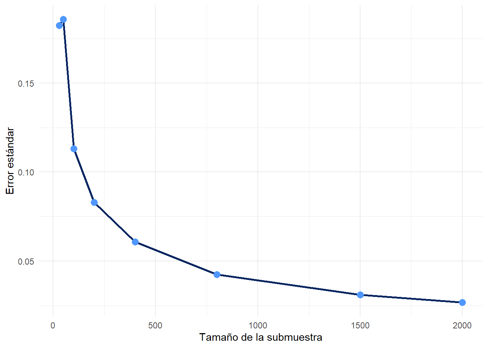

pacman::p_load(dplyr,
sjmisc,
sjPlot,
sjlabelled,
kableExtra,
ggplot2)Práctico 03. Bondad de ajuste e inferencia en regresión simple
Métodos estadísticos para Ciencias Sociales III
1 Presentación
1.1 Objetivo de la práctica
En el práctico anterior estimamos una recta de regresión, interpretamos sus coeficientes y calculamos valores predichos y residuos. Quedaron pendientes dos preguntas que la sesión teórica abordó y que esta guía lleva a R:
- ¿Qué tan bien se ajusta esa recta a los datos?
- ¿Podemos generalizar el resultado más allá de nuestra muestra?
Seguimos trabajando exclusivamente con regresión simple, es decir, con un solo predictor. Al terminar, usted debería ser capaz de:
- Descomponer la varianza de \(Y\) en sus componentes de regresión y de error
- Calcular e interpretar el \(R^2\), y distinguirlo del \(R^2\) ajustado
- Comprender por qué el error estándar depende del tamaño de la muestra
- Calcular a mano el error estándar de un coeficiente, su estadístico \(t\) y su intervalo de confianza
- Contrastar el valor \(t\) obtenido con un valor crítico y decidir sobre la hipótesis nula
- Leer una tabla de regresión distinguiendo la información de estimación y la de inferencia
1.2 Datos
Continuamos con la primera ola (2016) del Estudio Longitudinal Social de Chile (ELSOC) y con el modelo del práctico anterior: confianza en vecinos según edad.
2 Preparación
2.1 Librerías
rm(list = ls())
options(scipen = 999)2.2 Carga y procesamiento
load(url("https://dataverse.harvard.edu/api/access/datafile/7245118"))
proc_data <- elsoc_long_2016_2022.2 %>%
filter(ola == "1") %>%
select(t01, m01, m0_sexo, m0_edad) %>%
set_na(., na = c(-999, -888, -777, -666)) %>%
rename("confianza_vecinos" = t01,
"educacion" = m01,
"sexo" = m0_sexo,
"edad" = m0_edad)
proc_data <- na.omit(proc_data)
dim(proc_data)[1] 2906 42.3 El modelo del práctico anterior
modelo <- lm(confianza_vecinos ~ edad, data = proc_data)
coef(modelo)(Intercept) edad
2.829587789 0.007944355 Guardamos también los valores predichos y los residuos, que utilizaremos a lo largo de toda la guía:
proc_data$predicho <- fitted.values(modelo)
proc_data$residuo <- residuals(modelo)3 Bondad de ajuste: el \(R^2\)
3.1 La lógica de la descomposición
Recordemos la pregunta: de toda la variación que existe en la confianza en vecinos, ¿qué parte logra recoger nuestro modelo y qué parte queda como error?
Para responderla comparamos tres cantidades para cada caso:
- \(Y_i\): el valor observado
- \(\widehat{Y}_i\): el valor predicho por el modelo
- \(\bar{Y}\): el promedio general de \(Y\)
Con ellas construimos tres sumas de cuadrados:
\[SS_{tot}=\sum(y_i-\bar{y})^2 \qquad SS_{reg}=\sum(\hat{y}_i-\bar{y})^2 \qquad SS_{error}=\sum(y_i-\hat{y}_i)^2\]
3.2 Cálculo en R
media_y <- mean(proc_data$confianza_vecinos)
ss_tot <- sum((proc_data$confianza_vecinos - media_y)^2)
ss_reg <- sum((proc_data$predicho - media_y)^2)
ss_err <- sum(proc_data$residuo^2)
c(SS_tot = ss_tot, SS_reg = ss_reg, SS_error = ss_err) SS_tot SS_reg SS_error
4201.58878 42.93597 4158.65281 Verifiquemos que efectivamente \(SS_{tot}=SS_{reg}+SS_{error}\):
ss_reg + ss_err[1] 4201.589Salvo diferencias mínimas de redondeo, la igualdad se cumple. Esa es la propiedad que hace posible interpretar el \(R^2\) como una proporción.
3.3 Del \(SS\) al \(R^2\)
El \(R^2\) es simplemente la proporción de la variación total que corresponde al componente de regresión:
\[R^2=\frac{SS_{reg}}{SS_{tot}}=1-\frac{SS_{error}}{SS_{tot}}\]
ss_reg / ss_tot[1] 0.010218981 - (ss_err / ss_tot)[1] 0.01021898Y comparamos con lo que entrega R directamente:
summary(modelo)$r.squared[1] 0.010218983.4 Interpretación
Expresado en porcentaje:
round(summary(modelo)$r.squared * 100, 2)[1] 1.02La lectura correcta es: ese porcentaje de la varianza de la confianza en vecinos se asocia a la edad. Todo el resto queda sin explicar por este modelo.
Conviene detenerse en la magnitud. Se trata de un valor muy bajo, lo que es enteramente esperable: la confianza en los vecinos depende de muchos factores (características del barrio, tiempo de residencia, experiencias de victimización, nivel socioeconómico), y la edad es apenas uno de ellos.
ImportanteUn \(R^2\) bajo no invalida el hallazgo
En investigación social es habitual trabajar con valores de \(R^2\) modestos. Un modelo puede identificar una asociación real y teóricamente relevante aunque explique una fracción pequeña de la varianza. A la inversa, un \(R^2\) alto no garantiza que el modelo esté bien especificado ni que la relación sea causal.
3.5 El \(R^2\) ajustado
summary(modelo)$adj.r.squared[1] 0.00987815En regresión simple ambos valores son prácticamente idénticos. La diferencia aparece cuando se agregan predictores: el \(R^2\) nunca disminuye al incorporar variables, aunque sean irrelevantes, mientras que el ajustado penaliza esa incorporación. Volveremos sobre ello cuando trabajemos con regresión múltiple.
4 Inferencia
Hasta aquí hemos descrito lo que ocurre en nuestra muestra. La pregunta de inferencia es distinta: ¿podemos afirmar que esta relación existe en la población?
La significación estadística se refiere a poder sostener que el coeficiente es distinto de cero en la población, con un cierto nivel de probabilidad de error. Note que esto es independiente del tamaño del coeficiente: un \(\beta\) pequeño puede ser significativo y uno grande puede no serlo.
4.1 El error estándar depende del tamaño muestral
Antes de trabajar con el coeficiente, veamos la idea con el caso más simple: el promedio.
Si pudiéramos extraer muchas muestras de la misma población, obtendríamos un promedio algo distinto en cada una. La desviación estándar de esos promedios es el error estándar. Como en la práctica contamos con una sola muestra, se estima mediante:
\[SE_{\bar{x}}=\frac{s}{\sqrt{N}}\]
Supongamos que nuestra base es la población, y extraigamos de ella submuestras de distinto tamaño:
set.seed(123)
tamanos <- c(30, 50, 100, 200, 400, 800, 1500, 2000)
simulacion <- lapply(tamanos, function(k) {
sub <- sample_n(proc_data, size = k)
data.frame(n = k,
media = mean(sub$confianza_vecinos),
de = sd(sub$confianza_vecinos),
SE = sd(sub$confianza_vecinos) / sqrt(k))
})
simulacion <- bind_rows(simulacion)
kable(simulacion, "markdown", digits = 3)| n | media | de | SE |
|---|---|---|---|
| 30 | 3.033 | 0.999 | 0.182 |
| 50 | 3.220 | 1.314 | 0.186 |
| 100 | 3.120 | 1.131 | 0.113 |
| 200 | 3.165 | 1.172 | 0.083 |
| 400 | 3.212 | 1.215 | 0.061 |
| 800 | 3.190 | 1.198 | 0.042 |
| 1500 | 3.183 | 1.199 | 0.031 |
| 2000 | 3.203 | 1.192 | 0.027 |
Observe el comportamiento de cada columna. La media y la desviación estándar oscilan sin dirección clara. El error estándar, en cambio, disminuye sistemáticamente a medida que aumenta el tamaño de la muestra, porque \(N\) está en el denominador.
ggplot(simulacion, aes(x = n, y = SE)) +
geom_line(color = "#04245f", linewidth = 1) +
geom_point(color = "#4f97ff", size = 3) +
labs(x = "Tamaño de la submuestra", y = "Error estándar") +
theme_minimal()
De aquí se sigue una consecuencia importante: la significación estadística depende del tamaño muestral. Con muestras grandes, coeficientes muy pequeños pueden resultar significativos. Por eso la significación nunca debe confundirse con la relevancia sustantiva del resultado.
4.2 El error estándar del coeficiente
Para el coeficiente de regresión de un predictor continuo, el error estándar es:
\[SE_{\beta}=\sqrt{\frac{\frac{1}{N-2}\sum(y_i-\hat{y}_i)^2}{\sum(x_i-\bar{x})^2}}\]
En el numerador está la suma de los residuos al cuadrado, dividida por \(N-2\); en el denominador, la suma de cuadrados de \(X\). Calculémoslo paso a paso:
N <- nrow(proc_data)
suma_residuos2 <- sum(proc_data$residuo^2)
suma_x2 <- sum((proc_data$edad - mean(proc_data$edad))^2)
c(N = N, suma_residuos2 = suma_residuos2, suma_x2 = suma_x2) N suma_residuos2 suma_x2
2906.000 4158.653 680305.440 se_beta <- sqrt(((1 / (N - 2)) * suma_residuos2) / suma_x2)
se_beta[1] 0.001450862Comparemos con lo que entrega R:
summary(modelo)$coefficients Estimate Std. Error t value
(Intercept) 2.829587789 0.070468773 40.153783
edad 0.007944355 0.001450862 5.475611
Pr(>|t|)
(Intercept) 0.00000000000000000000000000000000000000000000000000000000000000000000000000000000000000000000000000000000000000000000000000000000000000000000000000000000000000000000000000000000000000000000000000000000000000000000000000000000000000000000000000000000000000000000000000000000000000008253057
edad 0.00000004732288465341960776062990579049483130802400410175323486328125000000000000000000000000000000000000000000000000000000000000000000000000000000000000000000000000000000000000000000000000000000000000000000000000000000000000000000000000000000000000000000000000000000000000000000000000000El valor de la columna Std. Error para edad coincide con nuestro cálculo.
Note el sentido de la fórmula: el error estándar aumenta cuando los residuos son grandes (el modelo predice mal) y disminuye cuando la varianza de \(X\) es grande y cuando aumenta el número de casos.
4.3 El estadístico \(t\)
El estadístico \(t\) compara el tamaño del coeficiente con su propia imprecisión:
\[t=\frac{\beta}{SE_{\beta}}\]
b1 <- coef(modelo)[2]
t_obtenido <- b1 / se_beta
t_obtenido edad
5.475611 4.4 El valor crítico
Para decidir si ese valor es suficientemente grande, lo contrastamos con un valor crítico obtenido de la distribución \(t\). Necesitamos dos elementos:
- el nivel de probabilidad de error, convencionalmente \(p=0{,}05\)
- los grados de libertad, que se calculan como \(N-k-1\), donde \(k\) es el número de predictores
gl <- N - 1 - 1 # un solo predictor
gl[1] 2904Como contrastamos tanto valores positivos como negativos (prueba de dos colas), repartimos el 0,05 en ambos extremos y buscamos el percentil 0,975:
valor_critico <- qt(0.975, gl)
valor_critico[1] 1.960781La regla de decisión es directa:
abs(t_obtenido) > valor_criticoedad
TRUE Como el \(t\) obtenido supera el valor crítico, rechazamos la hipótesis nula (\(\beta = 0\) en la población) con un 95% de confianza.
Probemos ahora con un nivel de confianza mayor, del 99%, para lo cual el percentil correspondiente es 0,995:
qt(0.995, gl)[1] 2.577523abs(t_obtenido) > qt(0.995, gl)edad
TRUE 4.5 El valor p
En lugar de comparar con un valor crítico, podemos obtener directamente la probabilidad asociada a nuestro \(t\):
2 * pt(-abs(t_obtenido), gl) edad
0.00000004732288 Se multiplica por dos porque la prueba es de dos colas. Este valor es el que aparece en la columna Pr(>|t|) de la salida de summary().
Recuerde qué significa: es la probabilidad de observar un coeficiente como el nuestro (o más extremo) si la hipótesis nula fuera verdadera. No es la probabilidad de que la hipótesis sea falsa, ni una medida de la importancia del efecto.
4.6 Intervalos de confianza
El intervalo de confianza se obtiene sumando y restando al coeficiente el error estándar multiplicado por el valor crítico:
\[IC_{95\%} = \beta \pm t_{crítico} \times SE_{\beta}\]
li <- b1 - (valor_critico * se_beta)
ls <- b1 + (valor_critico * se_beta)
c(limite_inferior = li, limite_superior = ls)limite_inferior.edad limite_superior.edad
0.005099533 0.010789178 Y con la función de R:
confint(modelo, level = 0.95) 2.5 % 97.5 %
(Intercept) 2.691413943 2.96776164
edad 0.005099533 0.01078918El intervalo entrega un rango de valores plausibles para el parámetro poblacional. Si no contiene el cero, el coeficiente es estadísticamente significativo al nivel de confianza correspondiente. Es una forma complementaria a la prueba \(t\), y en general más informativa, porque comunica también la precisión de la estimación.
5 Reporte
5.1 La tabla de regresión
tab_model(modelo,
show.se = TRUE,
show.ci = 0.95,
show.stat = TRUE,
digits = 3,
p.style = "stars",
dv.labels = c("Confianza en vecinos"),
pred.labels = c("(Intercepto)", "Edad"),
string.pred = "Predictores",
string.est = "β")| Confianza en vecinos | ||||
|---|---|---|---|---|
| Predictores | β | std. Error | CI | Statistic |
| (Intercepto) | 2.830 *** | 0.070 | 2.691 – 2.968 | 40.154 |
| Edad | 0.008 *** | 0.001 | 0.005 – 0.011 | 5.476 |
| Observations | 2906 | |||
| R2 / R2 adjusted | 0.010 / 0.010 | |||
| * p<0.05 ** p<0.01 *** p<0.001 | ||||
Toda la información que calculamos a mano está aquí: el coeficiente, su error estándar, el estadístico \(t\), el intervalo de confianza, los asteriscos de significación y el \(R^2\).
AdvertenciaAsteriscos según la función
El número de asteriscos no significa lo mismo en todas las librerías. En tab_model, un asterisco corresponde a \(p<0{,}05\), dos a \(p<0{,}01\) y tres a \(p<0{,}001\). Revise siempre la nota al pie de la tabla antes de interpretarla.
6 Tarea
6.1 Preparación
Cargar la base ELSOC y filtrar por la ola 4 (2019)
Seleccionar
c01(satisfacción con la democracia),m01(educación),m0_sexoym0_edad; recodificar los valores perdidos, renombrar y conservar los casos completosEstimar un modelo que utilice educación como predictor de la satisfacción con la democracia
6.2 Bondad de ajuste
Calcular a mano \(SS_{tot}\), \(SS_{reg}\) y \(SS_{error}\), y verificar que la suma de los dos últimos equivale al primero
Obtener el \(R^2\) a partir de esas sumas y comprobar el resultado con
summary()Interpretar el valor obtenido en una o dos oraciones, indicando qué proporción de la varianza queda sin explicar
6.3 Inferencia paso a paso
Calcular el error estándar del coeficiente aplicando la fórmula, y verificar el resultado con
summary()Calcular el estadístico \(t\)
Determinar los grados de libertad y obtener el valor crítico para un 95% y para un 99% de confianza
Indicar si se rechaza la hipótesis nula en cada caso, y explicitar qué afirma esa hipótesis
6.4 Intervalos de confianza
Calcular a mano el intervalo de confianza al 95% y comprobarlo con
confint()Explicar qué permite concluir el hecho de que el intervalo contenga o no el valor cero
6.5 Reporte
Presentar una tabla de resultados con
tab_modelRedactar un párrafo (máximo 250 palabras) que reporte el modelo siguiendo el formato revisado, es decir, indicando el coeficiente, el error estándar, el nivel de significación y el \(R^2\), y que distinga explícitamente entre significación estadística y relevancia sustantiva del resultado